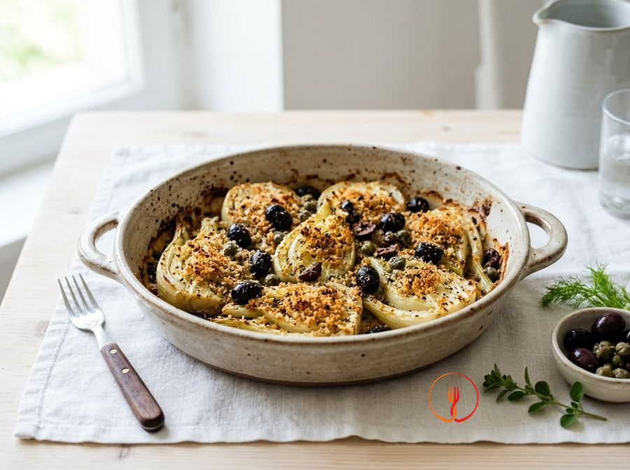

Fennel Gratin with Olives and Savoury Breadcrumbs
A crunchy side dish that transforms fennel into a delicious meal. The olives add a salty kick that contrasts with the natural sweetness of the cooked vegetable.
A versatile side dish that turns fennel into a crispy delight thanks to an olive and caper breading. The golden crumbs contrast beautifully with the tender vegetables. Perfect as an accompaniment for meat or fish.
Ingredients
- Large fennel bulbs3 pcs
- Pitted black olives60 g
- Wholemeal breadcrumbs50 g
- Salted capers (capers preserved in salt)10 g
- Extra virgin olive oil30 ml
- Dried oregano1 cucchiaino
Allergens
Gluten
Method
- Begin by thoroughly washing the 3 fennel bulbs under cold running water, ensuring any soil trapped between the layers is removed. Using a sharp chef's knife, trim off the green fronds and the tough base, then slice each bulb vertically into even slices about 1 cm thick. Aim to keep a small portion of the core attached to each slice so they remain intact during the subsequent cooking stages. The final result should be a series of uniform, clean slices ready for parboiling. The chef's tip: do not discard the green fronds; mince them finely at the end to add a fresh aromatic note and a pop of colour to the dish.
- Bring a large pot of lightly salted water to a boil and gently submerge the prepared fennel slices. Let them blanch for about 5 minutes over medium heat; the flesh should soften slightly but remain firm at the core without falling apart. Drain the fennel using a slotted spoon and place them on a clean tea towel or kitchen paper, patting them extremely thoroughly to remove all residual moisture. This drying process is vital to prevent steam from making the breadcrumbs soggy in the oven, which would ruin the crunch. Do not overcook them in the water, or the fennel will lose its elegant texture and become watery.
- While the fennel slices air-dry slightly, focus on the savoury topping by preparing a small bowl with 50 g of whole wheat breadcrumbs and a teaspoon of dried oregano. Take 10 g of capers, rinse them well to remove excess salt, pat dry, and finely chop them with a knife alongside 60 g of pitted black olives cut into thin rings. Combine these ingredients with the breadcrumbs and stir well with a spoon so the flavours are evenly distributed. You will achieve a fragrant, savoury mix with beautiful colour contrasts between the dark bread and the black olives. My secret for a superior crumb is adding a pinch of freshly ground black pepper to enhance the toasted notes of the whole wheat.
- Line a large baking tray with parchment paper and arrange the blanched, dried fennel slices in a single, tidy layer. Ensure the slices are not overlapping or crowded, leaving a few millimetres of space between each one to allow hot air to circulate freely. This technical detail is essential for achieving even cooking and slightly caramelised edges on every single piece. The fennel should look neatly laid out and ready for the flavourful topping. Avoid overcrowding the tray; if it is too small, prefer using two trays rather than piling the vegetables, which would cause them to steam rather than roast.
- Use 30 ml of extra virgin olive oil to drizzle over the fennel, distributing it in a steady stream to lightly coat each slice. Immediately after, generously scatter the breadcrumb and olive mix over the surface, aiming to cover the fleshy part of the fennel evenly. Press down lightly with the back of a spoon or your fingertips to help the crumbs adhere to the oil, creating a compact layer that won't slide off. The result should be a bed of fennel ready to transform into a crispy delicacy under the heat. Be careful not to pour too much oil in one spot: a fine, even drizzle ensures the dish remains light and elegant.
- Preheat your oven to 200°C using the fan setting and, once reached, place the tray on the middle rack for balanced heat distribution. Bake for 15-20 minutes, visually monitoring the browning progress as the aromas of olives and oregano begin to fill the kitchen. The crumbs should start to darken slightly, taking on an amber hue, while the fennel becomes tender and translucent. You will know it is succeeding when you see the edges of the fennel slightly curled and golden. If your oven runs hot at the bottom, move the tray to a higher rack halfway through to protect the base of the fennel slices.
- For that professional final touch that provides the 'wow' factor, switch on the oven's grill function for the final 3 minutes of cooking. Stay close to the oven and watch through the glass: the crumbs should turn a deep golden-brown and begin to sizzle noticeably under the direct heat. This phase transforms the topping into a crunchy crust that perfectly contrasts the soft fennel flesh beneath. The optimal result is a well-toasted surface that is not burnt, with the olives releasing their essential oils. Never walk away during the grilling stage, as the transition from perfectly golden to bitterly burnt can happen in less than sixty seconds.
- Remove the tray from the oven and let the fennel rest for at least 2-3 minutes before serving. This brief thermal rest allows the fibres to settle and the crust to firm up slightly, making it easier to transfer the slices to plates without the topping falling off. Arrange the slices on a warm serving platter, perhaps adding the reserved green fronds for a touch of vibrant colour. Serve this sophisticated side dish hot or at room temperature, pairing it with poached eggs or a pulse-based soup for a perfect nutritional balance. Remember that gratinéed fennel tastes even better when enjoyed slowly, allowing the palate to distinguish the saltiness of the capers and the sweetness of the vegetable.
Tips
- Dry the fennel slices thoroughly after boiling to achieve a crispier golden crust.
- Rinse the salted capers well under running water to correctly balance the dish's saltiness.
- Distribute the breadcrumbs evenly to completely cover the surface of the fennel slices.
Variations
- Add toasted pine nuts to the breadcrumb mix for a crunchy, nutty finish.
- Use pitted Taggiasca olives instead of standard black ones for a more intense and aromatic taste.
Nutrition facts (estimate)
| Per serving (195 g) | Per 100 g | |
|---|---|---|
| Energy | 791 kJ / 189 kcal | 406 kJ / 97 kcal |
| Protein | 4.5 g | 2.3 g |
| Carbohydrates | 26 g | 13.3 g |
| of which sugars | 3.5 g | 1.8 g |
| Fat | 8.4 g | 4.3 g |
| of which saturates | 1.2 g | 0.6 g |
| Fibre | 8.1 g | 4.2 g |
| Salt | 0.75 g | 0.4 g |
AI estimates based on average CREA / USDA data: indicative only, not a substitute for medical or dietitian advice.
Open the recipe in the app for the shopping list, ingredient sheets and nearby shops.